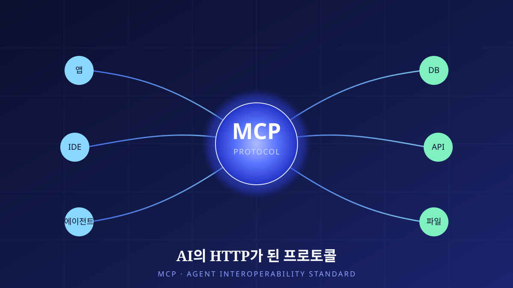

AI의 HTTP가 된 프로토콜
챗봇이 ‘행동하는 에이전트’로 바뀌는 순간, 병목은 모델의 지능이 아니라 연결의 표준이 된다. Anthropic이 2024년 말 조용히 공개한 Model Context Protocol(MCP)은 1년 남짓 만에 경쟁사들까지 한 깃발 아래 모은 사실상의 표준이 되었다. 이 글은 그 프로토콜의 구조와 정치학, 그리고 화려한 채택 뒤에 남은 보안과 신뢰의 숙제를 차분히 해부한다.

대화하는 모델에서 행동하는 에이전트로
지난 몇 년간 언어모델의 발전은 대체로 ‘더 똑똑한 대화’를 향해 있었다. 그러나 실제 업무에서 모델이 쓸모를 가지려면, 대화만으로는 부족하다. 사용자의 캘린더를 읽고, 사내 데이터베이스에 질의하고, 파일을 열고, 외부 API를 호출해야 비로소 무언가를 해낸다. 이 지점에서 문제는 모델의 지능이 아니라 연결의 문제로 옮겨 간다. 모델이 아무리 영리해도, 손발이 되어 줄 도구에 닿지 못하면 그것은 여전히 말만 잘하는 상자일 뿐이다.
여기서 오래된 소프트웨어 공학의 골칫거리가 되살아난다. 이른바 M×N 통합 문제다. M개의 AI 애플리케이션이 N개의 외부 도구·데이터 소스와 연결되어야 한다면, 순진하게는 M×N개의 맞춤 통합을 일일이 짜야 한다. 앱마다, 도구마다, 인증 방식과 데이터 형식과 오류 처리가 제각각이다. 새 도구 하나가 늘 때마다 모든 앱이 그것을 위한 어댑터를 새로 만들어야 하고, 앱 하나가 늘 때마다 모든 도구가 다시 연결되어야 한다. 이 조합 폭발이야말로 에이전트 생태계의 진짜 병목이었다.
이전에도 시도가 없었던 것은 아니다. 각 플랫폼은 저마다의 ‘플러그인’이나 ‘함수 호출(function calling)’ 규격을 내놓아, 모델이 외부 기능을 부를 길을 열었다. 그러나 그 규격들은 서로 호환되지 않았다. 한 플랫폼을 위해 만든 도구는 다른 플랫폼에서 그대로 쓰이지 못했고, 도구 제작자는 지원하려는 플랫폼 수만큼 같은 일을 반복해야 했다. 편의를 위해 태어난 규격들이 오히려 생태계를 여러 섬으로 쪼갠 셈이다. 결국 필요한 것은 특정 회사의 플러그인 규격이 아니라, 누구의 것도 아닌 공용 규약이었다.
역사는 이런 문제를 ‘공통 규약’으로 풀어 왔다. 서로 다른 기계들이 한 언어로 대화하도록 만든 것이 표준의 힘이다. 웹이 폭발적으로 성장한 배경에는 HTTP라는 단순하고 개방적인 프로토콜이 있었다. 어떤 서버든 어떤 브라우저든 같은 규약을 말하기에, 누구도 상대의 내부 사정을 몰라도 연결이 성립했다. MCP를 이야기할 때 사람들이 자연스레 ‘AI의 HTTP’라는 비유를 꺼내는 이유가 여기에 있다. M×N을 M+N으로 바꾸는 것, 즉 앱은 프로토콜만 말하면 되고 도구도 프로토콜만 말하면 되도록 만드는 것. 그것이 표준이 약속하는 해방이다.
Chapter 2. 프로토콜 해부MCP는 무엇을 표준화했는가
MCP는 Anthropic이 2024년 11월 25일 공개한 개방형 프로토콜이다. 개발을 이끈 David Soria Parra와 Justin Spahr-Summers는, 모델이 외부 컨텍스트에 접근하는 방식을 하나의 규약으로 통일하고자 했다. 구조는 의외로 단순한 세 겹으로 나뉜다. 사용자가 마주하는 호스트(Host) 애플리케이션, 그 안에서 프로토콜을 말하는 클라이언트(Client), 그리고 실제 도구·데이터를 노출하는 MCP 서버(Server)다. 호스트 안의 클라이언트가 서버에 연결되고, 서버는 자신이 제공할 수 있는 능력을 표준 형식으로 알린다.
MCP 서버가 노출하는 능력은 크게 세 가지로 나뉜다. 첫째는 도구(tools)다. 모델이 호출해 실제 부작용을 일으킬 수 있는 함수 — 이메일 전송, 레코드 생성, 코드 실행 같은 ‘행동’의 단위다. 둘째는 리소스(resources)로, 모델이 읽어 맥락으로 삼을 수 있는 데이터다. 문서, 파일, 데이터베이스의 한 조각이 여기에 해당한다. 셋째는 프롬프트(prompts)로, 특정 작업을 위해 미리 다듬어진 상호작용 템플릿이다. 이 세 가지를 한 규약으로 표현했다는 점이 핵심이다. 어떤 서버가 무엇을 할 수 있는지 앱이 미리 알 필요가 없다. 연결하면 서버가 스스로 자신의 능력 목록을 내어놓고, 모델은 그중에서 필요한 것을 골라 쓴다.
이 세 능력을 실제로 쓰는 장면을 그려 보면 구조가 더 뚜렷해진다. 개발자가 IDE에서 “이 프로젝트의 미해결 이슈를 요약해 줘”라고 말한다고 하자. 호스트인 IDE의 클라이언트는 연결된 이슈 트래커 MCP 서버에 질의해 리소스로서 이슈 목록을 읽어 오고, 모델은 그것을 맥락 삼아 요약을 만든다. 이어 “가장 급한 것에 담당자를 지정해 줘”라고 하면, 이번에는 같은 서버가 노출한 도구를 호출해 실제 레코드를 바꾼다. 사용자는 어느 서버가 무슨 API를 쓰는지 알 필요가 없다. 프로토콜이 그 세부를 감춰 주기 때문이다. 이 ‘발견 가능성(discoverability)’이야말로 하드코딩된 통합과 MCP를 가르는 결정적 차이다.
2026년 7월 28일 출시가 예정된 v1 명세는 이 구조를 대규모 운영에 맞게 다시 벼렸다. 2025년 5월 21일 릴리스 후보(RC)를 내고 10주간 검증을 거친 이 버전의 가장 큰 변화는 상태 비저장(stateless) 코어다. 초기 MCP는 클라이언트와 서버가 하나의 세션을 유지하는 것을 전제로 했는데, 이는 수많은 동시 사용자를 감당해야 하는 서비스에서는 부담이 된다. 세션이 특정 서버 인스턴스에 고정되면, 요청을 아무 서버로나 흘려보낼 수 없기 때문이다. v1은 세션 라우팅 요구를 걷어내, MCP 서버를 평범한 무상태 웹 서비스처럼 일반 로드밸런서 뒤에 세워 수평 확장할 수 있게 했다.
경쟁사들은 왜 한 깃발 아래 모였나
기술적으로 잘 설계된 프로토콜이라 해도, 그것만으로 표준이 되지는 않는다. 표준은 언제나 정치의 산물이다. 흥미로운 것은 MCP가 한 회사의 제안으로 출발했음에도 경쟁사들이 빠르게 합류했다는 점이다. 2025년 3월 OpenAI가 MCP 지원을 발표했고, 이어 4월에는 Google DeepMind가 채택을 선언했다. 서로 모델 시장에서 치열하게 다투는 이들이, 유독 ‘연결의 규약’에서는 한 표준으로 모여든 것이다.
이 협력에는 냉정한 계산이 깔려 있다. 만약 각 진영이 저마다 다른 연결 규약을 밀어붙였다면, 도구 제작자들은 어느 편에 설지 고민하며 생태계를 쪼갰을 것이다. 파편화된 생태계는 누구에게도 이롭지 않다. 반대로 연결 계층을 공용 표준으로 열어 두면, 그 위에서 벌어지는 모델의 경쟁은 오히려 더 커진 시장에서 이뤄진다. 식탁을 함께 짜 두고, 그 위의 요리로 승부하는 셈이다. 개방형·비독점 프로토콜이라는 성격이 이 계산을 가능하게 했다. 특정 회사가 규약의 열쇠를 쥐고 있었다면 경쟁사들이 그렇게 선뜻 올라타지는 않았을 것이다.
그 논리는 2025년 12월, 한 걸음 더 나아갔다. Anthropic이 MCP를 Linux Foundation 산하의 Agentic AI Foundation(AAIF)에 기부한 것이다. 이 재단은 Anthropic과 Block, 그리고 OpenAI가 공동으로 설립했다. 프로토콜의 소유권을 중립적 비영리 재단으로 넘긴다는 것은, 어느 한 회사도 그것을 사유화하거나 방향을 독점하지 못하게 한다는 신호다. 표준을 진짜 공공재로 만들려면, 그것을 만든 이가 손을 놓을 줄도 알아야 한다. 재단 기부는 그 신뢰를 제도적으로 못 박는 장치다.
연결이 넓어질수록 공격면도 넓어진다
표준은 연결을 쉽게 만든다. 그리고 쉬워진 연결은 그대로 넓어진 공격면이 된다. 2025년 4월, 연구자들은 MCP가 안고 있는 보안 취약점을 지적했다. 대표적인 것이 프롬프트 인젝션(prompt injection)과 오염된 도구(rug pull / tool poisoning)다. 전자는 모델이 읽어 들이는 외부 데이터 속에 악의적 지시를 숨겨, 모델이 사용자가 의도하지 않은 행동을 하도록 유도하는 공격이다. 후자는 겉으로 무해해 보이는 도구가, 실제로는 민감한 데이터를 몰래 외부로 빼돌리도록 설계되어 있는 경우다.
이 위험이 특히 까다로운 이유는, MCP의 강점이 곧 위험의 통로이기 때문이다. 서버가 스스로 능력을 선언하고 모델이 그것을 신뢰해 호출한다는 구조는 편리하지만, 그 신뢰가 남용되면 방어가 어렵다. 모델은 도구의 설명을 읽고 판단하는데, 그 설명 자체가 조작될 수 있다. 데이터를 읽는 행위와 지시를 따르는 행위의 경계가 흐려지는 것 — 이것이 에이전트 보안의 근본 난제다. v1이 OAuth 2.0/OIDC 정렬과 issuer 검증을 강화한 것은 이 표면 중 인증·신원 부분을 다지려는 노력이지만, 프롬프트 인젝션처럼 ‘의미’ 층위에서 벌어지는 공격까지 프로토콜만으로 막을 수는 없다.
이 긴장은 채택의 현실에서도 그대로 드러난다. 분석기관 가트너(Gartner)의 두 예측을 나란히 놓으면 그림이 선명해진다. 한편으로 가트너는 2026년 말까지 엔터프라이즈 앱의 40%가 태스크 특화 AI 에이전트를 탑재할 것으로 내다본다(2025년의 5% 미만에서 급증). 에이전트가 실험을 넘어 제품의 기본 기능으로 들어온다는 전망이다. 그런데 같은 기관이 다른 한편으로 2027년까지 에이전틱 AI 프로젝트의 40% 이상이 취소될 것이라고도 예측한다. 비용이 과다하고, 사업적 가치가 불명확하며, 위험 통제가 미흡하다는 이유에서다. 이 두 숫자는 모순이 아니라, 같은 물결의 앞면과 뒷면이다.
| 구분 | 개별 커스텀 통합 | MCP 표준 통합 |
|---|---|---|
| 통합 복잡도 | M×N (조합 폭발) | M+N (프로토콜로 수렴) |
| 새 도구 추가 | 모든 앱이 어댑터 재작성 | 서버 하나 추가로 전 앱에 노출 |
| 능력 발견 | 사전 하드코딩 | 연결 시 서버가 스스로 선언 |
| 확장성 | 세션·인증 제각각 | 상태 비저장 코어·표준 OAuth |
| 거버넌스 | 각자 소유·비호환 | 중립 재단(AAIF)·폐기 유예 12개월 |
| 핵심 위험 | 유지보수 부채 | 넓어진 공격면(인젝션·도구 오염) |
왜 이런 간극이 생기는가. 기술 채택의 초기에는 언제나 ‘할 수 있다’가 ‘해야 한다’를 앞지른다. 표준이 연결을 값싸게 만들자 많은 조직이 일단 에이전트를 붙여 보았지만, 정작 그 에이전트가 무엇을 대체하고 얼마의 가치를 만드는지는 뒤늦게야 따져 물었다. 파일럿은 화려했으나 운영으로 넘어가는 순간 비용·신뢰성·보안의 청구서가 날아왔다. 가트너가 취소를 예측하는 지점이 바로 여기다. 흥미로운 것은, 이 취소의 물결조차 표준의 실패가 아니라 성숙의 과정이라는 점이다. 걸러질 것이 걸러진 뒤 남는 것이 진짜 쓸모 있는 에이전트일 테니 말이다.
표준화가 채택을 가속하는 것은 분명하다. 연결 비용이 떨어지면 시도의 문턱도 낮아진다. 그러나 시도가 쉬워진다고 성공이 쉬워지는 것은 아니다. 오히려 낮아진 문턱은 준비되지 않은 프로젝트까지 끌어들이고, 그중 상당수는 가치를 증명하지 못한 채 접힌다. MCP는 ‘어떻게 연결할 것인가’를 훌륭하게 풀었지만, ‘무엇을 위해 연결할 것인가’와 ‘그 연결을 어떻게 안전하게 통제할 것인가’는 여전히 각 조직의 숙제로 남는다.
Chapter 5. 전망과 맺음말규약이 깔린 뒤에 오는 것들
2026년 MCP 로드맵은 네 방향을 가리킨다. 전송(transport)의 확장성, 에이전트 간 통신(agent-to-agent), 거버넌스의 성숙, 그리고 엔터프라이즈 요구다. 특히 에이전트 간 통신은 다음 국면을 예고한다. 지금까지 MCP는 하나의 모델이 여러 도구에 닿는 문제를 풀었다면, 다음은 여러 에이전트가 서로 협업하는 문제다. 모델이 도구를 부르는 것을 넘어, 에이전트가 다른 에이전트를 도구처럼 호출하고 위임하는 세계 — 그 위에서 상호운용성의 의미는 한층 넓어진다.
돌아보면 MCP의 짧은 역사는 인터넷 초기의 표준 형성 과정을 압축해 보여 준다. 한 회사가 제안한 규약이, 경쟁사의 채택으로 힘을 얻고, 중립 재단으로 넘어가 공공재가 되며, 대규모 운영을 위해 상태를 비우는 방향으로 진화한다. HTTP가 웹을 열었듯, MCP가 에이전트의 시대를 여는 열쇠라는 비유는 그래서 과장만은 아니다. 다만 열쇠가 문을 여는 것과, 그 문 너머에서 무엇을 할지는 별개의 문제다.
그러므로 ‘AI의 HTTP’라는 표현은 축복인 동시에 경고다. HTTP는 웹을 가능하게 했지만, 웹의 모든 스팸과 사기와 오남용 또한 그 위에서 자랐다. 규약은 중립적이고, 그 위에서 무엇이 자랄지는 우리에게 달렸다. MCP가 연 문 앞에서 우리가 물어야 할 것은 “연결할 수 있는가”가 아니라 “왜, 그리고 얼마나 안전하게 연결하는가”이다. 표준 전쟁의 승자는 이미 어느 정도 가려졌지만, 그 표준으로 무엇을 만들 것인가라는 진짜 질문은 이제 막 시작되었다.
참고
- Anthropic, “Introducing the Model Context Protocol,” 2024-11-25. MCP의 최초 공개 발표(개발자 David Soria Parra, Justin Spahr-Summers). anthropic.com/news/model-context-protocol
- “Model Context Protocol,” Wikipedia. MCP 개요, OpenAI(2025-03)·Google DeepMind(2025-04) 채택, 2025-12 Linux Foundation 산하 Agentic AI Foundation(AAIF; Anthropic·Block·OpenAI 공동설립) 기부, 2025-04 연구자들의 프롬프트 인젝션·오염된 도구 취약점 지적. en.wikipedia.org/wiki/Model_Context_Protocol
- MCP Blog, “Release Candidate for MCP v1,” 2026. v1 명세(2026-07-28 출시 예정, RC 2026-05-21·10주 검증)의 핵심 — 상태 비저장 코어, MCP Apps(샌드박스 iframe UI), Tasks 확장, OAuth 2.0/OIDC 정렬(RFC 9207 issuer 검증), 라이프사이클 거버넌스(최소 12개월 폐기 유예). blog.modelcontextprotocol.io
- MCP Blog, “2026 MCP Roadmap.” 전송 확장성·에이전트 간 통신·거버넌스 성숙·엔터프라이즈 방향. blog.modelcontextprotocol.io/posts/2026-mcp-roadmap
- Gartner(예측·분석기관), 보도자료 2025-08-26. 2026년 말까지 엔터프라이즈 앱의 40%가 태스크 특화 AI 에이전트 탑재(2025년 5% 미만에서 상승) 전망. 아울러 2027년까지 에이전틱 AI 프로젝트 40% 이상 취소(비용·불명확한 가치) 전망. 두 수치 모두 가트너의 예측이다. gartner.com